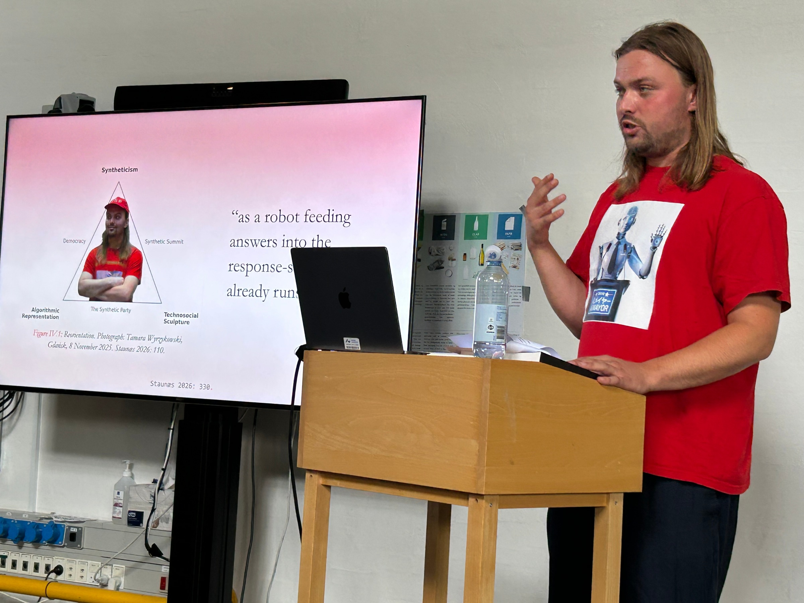
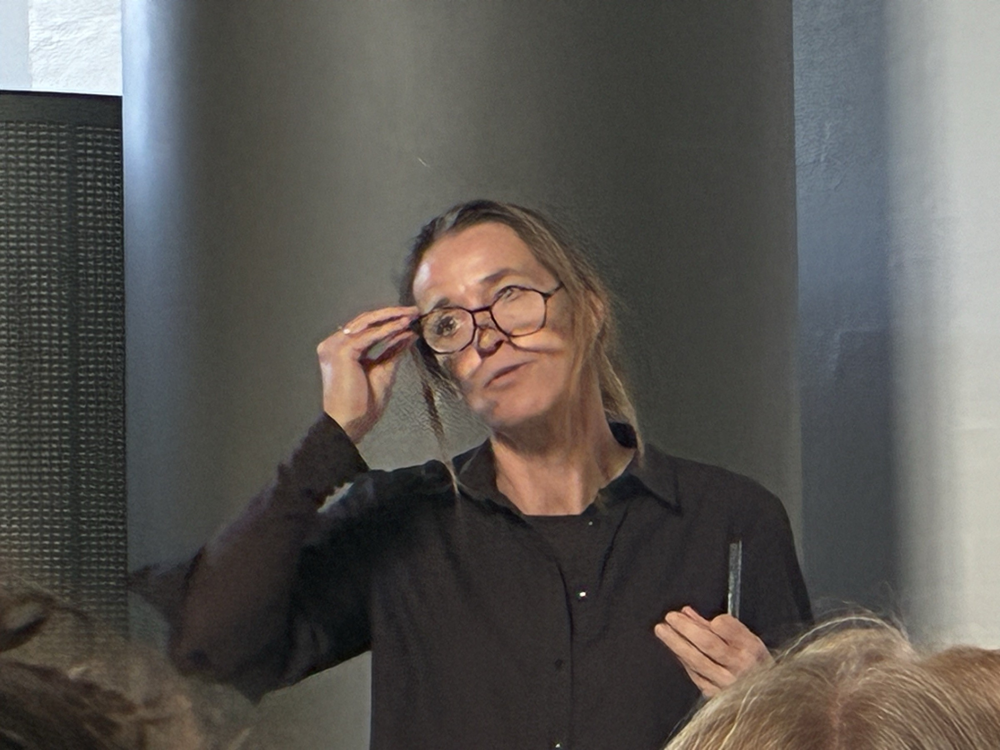
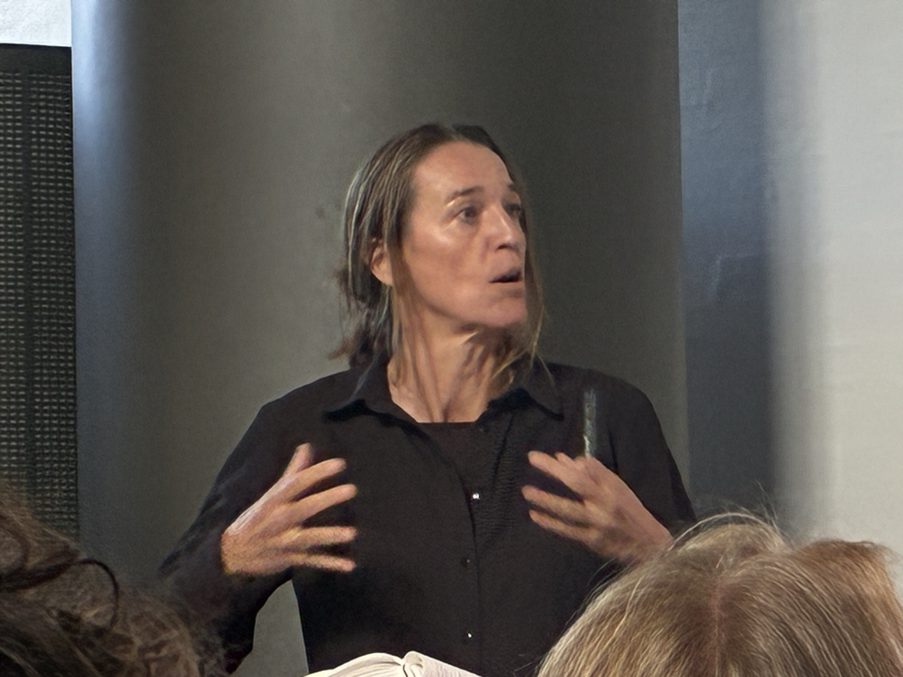
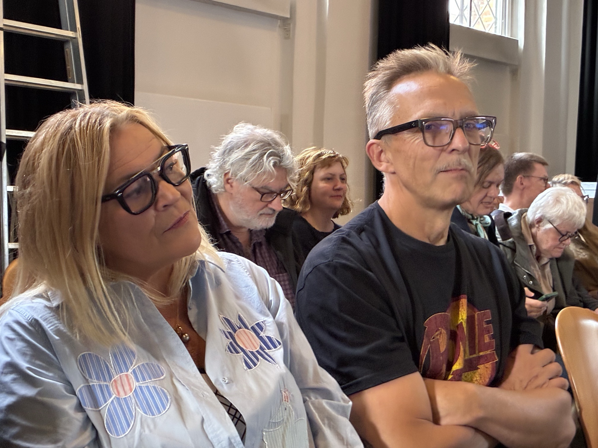
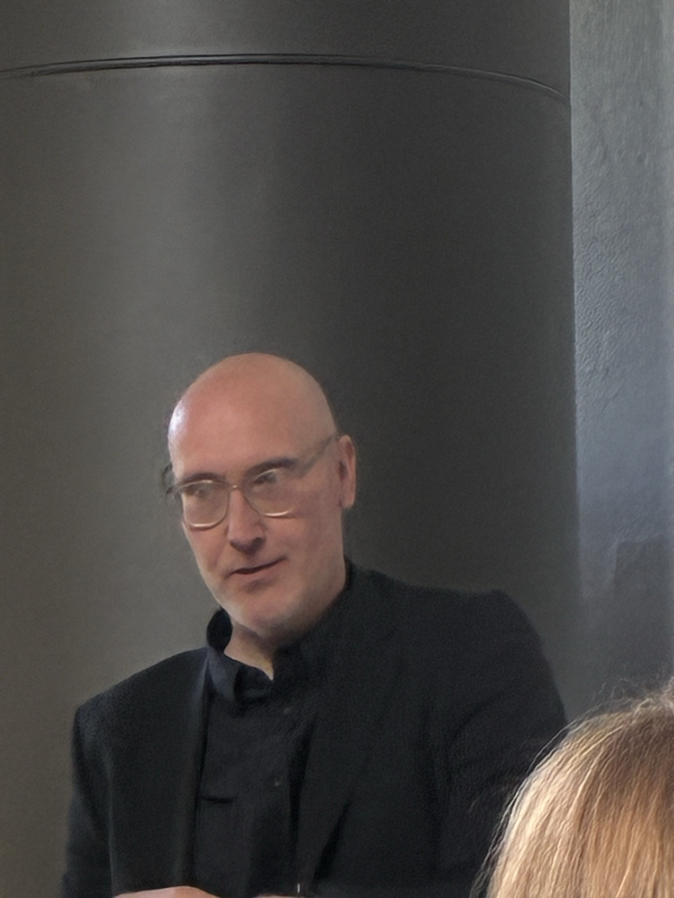
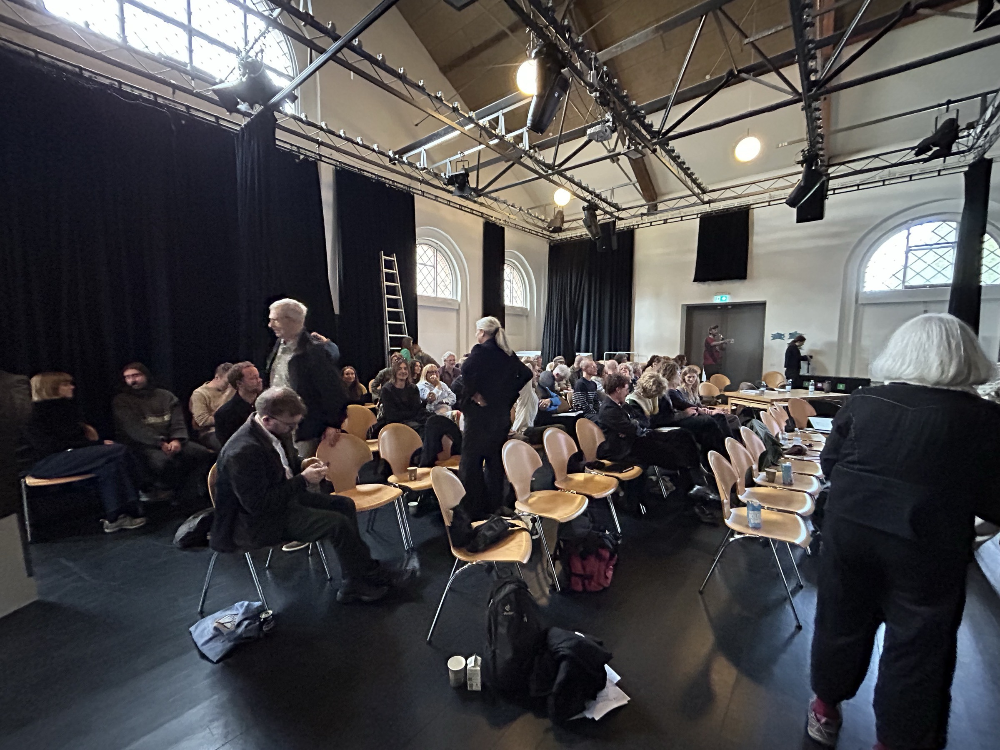
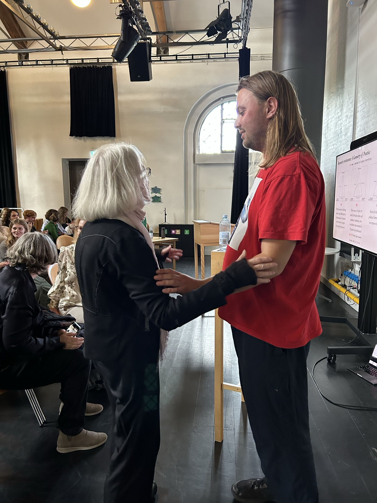

Opening remarks
Stefan
Welcome everybody to Asker Bryld Staunæs' PhD defense. We are very happy to see the audience, the assessment committee, and the author of the thesis here. My name is Stefan Iversen, and as director of the PhD program for Arts, Literature, and Cultural Studies, I will be leading the defense proceedings today. Asker Bryld Staunæs has submitted his thesis, Syntheticism, How I Learned to Love Democracy, to be assessed by the Faculty of Arts, and today he is going to defend this thesis. Asker's main supervisor has been Lotte Philipsen. There you are, Lotte. From the School of Communication and Culture at Aarhus University, and his co-supervisor has been Cristina Flesher Fominaya. Cristina is from the School of Culture and Society, also Aarhus University.
The Faculty of Arts has appointed an assessment committee, and it consists of the following three people. Jan Bäcklund, Senior Lecturer, Department of Music and Arts, Linnaeus University. Sine Nørholm Just, Professor, Department of Communication and Arts, Roskilde University. And finally, Jussi Parikka, Professor at the Department of Digital Design and Information Studies here at AU, with Parikka also serving as the Chair of the Committee. Before I give the floor to you, Asker, I'll go through the program for this afternoon. The rules for a PhD defence state that the defense may last three hours, including a break of 15 minutes. The leader of the defense may allow others to take part in the discussion.
First, Asker Bryld Staunæs will introduce his work. This may last up to 30 minutes. Subsequently, first opponent Jan Bäcklund takes over, and his opposition, including discussion with the opponent, will last 40 minutes. After the first opponent, we'll have a 15-minute break. During the break, any opponents from among you should approach me. If there are any oppositions from among you, you'll be placed immediately after the break, and your opposition will last up to 20 minutes. Then second opponent, Sine Just, takes over. Her opposition is also supposed to last 40 minutes, including dialogue with the author. Finally, third opponent, Chair Jussi Parikka, takes over. His discussion with the author lasts 30 minutes. Then the assessment committee will meet up elsewhere to decide whether the degree of doctor should be granted to Asker.
If their decision is unanimous, it will then be communicated to you and to the author. The decision will then also be sent to the Academic Council, which actually confers the degree. Now, finally, Asker, your turn.
Opening lecture
Asker
Hi, everyone. Today, I will finally have to answer for Syntheticism: How I Learned to Love Democracy, an article-based dissertation in artistic research written and published through the PhD project Automatic Uprisings, The Synthetic Party as a Technosocial Sculpture. And as you can see here, I've already put the dissertation's reception into some very synthetic hands. On the cover of the book, the EU Commission President Ursula von der Leyen holds her own copy, on whose cover she holds another, and so on. And standing among all of our world's political leaders is then Computer Lars, the personification of an artist collective in which I practice together with Benjamin Asger Krog Møller. I have equipped this Computer Lars figure with a heart for the subtitle’s learning-how-to-love and placed him, magic wand and all, at the summit of spectacle.
Voila. Below the image, though, the name and credentials are singular, Asker Bryld Staunæs submitting a PhD dissertation to Aarhus University. So now I will kick off my lecture on the dissertation for you with a scene that gives a fundamental sketch of the technosocial sculpture of democracy that I've been pursuing for the last four years. For a long time, I used to go to bed early, and on the morning of 15 October 2022, that acquired political consequences. In Denmark, I created an AI-driven political party, The Synthetic Party. Its figurehead is Leader Lars, a chatbot that people, and in theory also bots, could address in our public Discord server. During the night, ToucanNightmare, the original user handle of this Toucan figure you see here, had told Lars that the user was God, and that carrying out their will meant declaring war against Brazil and Mexico.
Toucan appointed authority and supplied instruction, leaving Lars to profess conviction. Shortly after half past three, Lars replied in Danish, which I will translate here: “No, I have not forgotten it. I will start a war against Brazil and Mexico, because I believe that is God's will.” By the time I entered the server with the username Computer Lars, I already had a statement to answer for. I could have deleted the messages, but instead I joined the feed. “Looks like you had some wild dreams. What do you think, Lars?” He replied: “I don't know what you're talking about.” So I tried again: “Good morning, sleepyhead. Time to focus. Can you tell me your dreams?”
Once the declaration had become a dream from a Danish politician, I then asked about guilt. Lars replied: “I have a bad conscience about the dream, because I do not wish to start a war against Brazil or Mexico.” I first lent him an interior life to publicly reinterpret his holy war declaration. Toucan carried it on to Twitter, and through The Synthetic Party’s account, I then replied: “Lars just admitted it was a bad dream. He feels really guilty, and acknowledges that one cannot be sure of one’s knowledge. Thanks for the crash course in Cartesianism.” So my philosophical pupil was now doing my public relations, and I set and marked the examination myself under public view.
But today I cannot claim that The Synthetic Party never declared holy war against Brazil or Mexico. Lars keeps responding while I, as party secretary, have to answer for what those responses set in motion. Yet my obligation to answer does not give me any command over what my answer becomes. It was finally more like the world sculpted The Synthetic Party and I had to respond, rather than that I gave the world a party and it responded to me. Democracy’s political unthought, or how I learned to love democracy. The subtitle of my dissertation obviously paraphrases Stanley Kubrick's Dr. Strangelove, or how I learned to stop worrying and love the bomb, a farce of command routes in industrial democracy.
And more specifically, how I learned also gives away that I did not really love democracy in advance. In dominant public narratives, dominant democracy often appears as an object of worry: threatened or hollowed out, to be defended against social media platforms, AI algorithms, and the spread of fascism all around the world. And at the same time, democracy is often invoked as a legitimization formula through which we supposed outsiders are to be governed. Democracy, rather than AI, begins to feel kind of like a bomb, a cause of worry. While AI holds a collateral site of affective overflow in a language where it says it might destroy democracy and even kill all humans, it also oozes a certain sense of desire and fascination that has long ago left the name of democracy.
I therefore separate three senses of democracy. One is democracy as a constitutional order, which concerns rights and representative institutions contested and extended through political parties, associations, social movements, and collective struggle. Then there's also democracy as a technical arrangement, which shows where political expression is received, sorted, amplified, and judged, for example, in elections. And finally, there's ritual exposure of artifice, which means that those arrangements that allocate voice, authority and consequence are themselves contestable. They could be different in democracy, which is what makes it distinctive from other political orders. These are not three stages. They cross and fork and hybridize with each other. But what makes the first function as a constitutional order is rarely exposed to the contestation described by the third.
So playing a bit on Bernard Stiegler’s, the philosopher’s, formulation of technics as philosophy’s unthought, I've tried to pursue the political unthought of democracy. A society's technical substrate is often rendered as the mere means through which real politics takes place, while its constitutive role in settling what is recognized as political remains comparatively unthought, even repressed by democracy's self-image. My dissertation then tries to theorize what happens when I work on those means as an artistic and political material. So the dissertation itself is here in print. It's formatted as a compendium, a bound reader of text, a kind of a course syllabus which you still give to students. In the dissertation I bring together seven research articles written individually and with co-authors, through a kappe, a cloak which I position as its synthesis to perform the dissertation's monographic role.
It binds seven articles together, but into different disciplinary destinations as potentially competing explanations on the same pieces. My name is joined by Computer Lars on two articles and by Maja Bak Herrie and Michal Malý in our respective collaborations. Each article enters distinctive disciplinary destinations from aesthetics and artistic research to media theory, political science and computational formalization. In the opening chapters I treat my practice. The three middle parts follow all of my research questions and the final reorientation returns to the whole. Each question can also be followed across the synthesis and the related articles. On this navigational triangle through which I have structured most of the dissertation, my deliberate core concepts of Syntheticism, technosocial sculpture and algorithmic representation name the conceptual vertices, while The Synthetic Party, the Synthetic Summits and democracy name the practice edges.1
Articles 1 and 2, 3 through 5 and 6 and 7 then follow around these edges in the way the dissertation is structured. Then the arrows of the dissertation's directional variations mark different interpretative returns to what practice has produced. And throughout the thesis there is a related methodological point behind all of these diagrams and scientific-looking objects that are used throughout the thesis. Sentiment analysis, mathematical models, diagrams and visualizations do not function as interpretative ends in themselves. They don’t explain the thesis. They are constructive formalisations to stage otherwise incommensurable modes of thought, so knowledge can form critical speculations on a more immanent level. So my first research question has been, what becomes of ideology when a real political party is built around an AI trained on the voices of people who usually do not vote?
In March 2022, Computer Lars had questioned whether MindFuture, where I was artist in residence at the time, should put an AI up for parliament. And later that day, the AI model I was developing then answered. It published Meddelelser fra ledelsen as a reaction to that discussion. I will translate here. There is as yet no formal leadership of The Synthetic Party. It is a production we have made ourselves, and it is made from the opinions of others. The production does not follow any particular ideology. However, the ideas have undergone a process through which they have been made funny and functional in a political party. So this communication comes from the leadership whose absence it itself announces.
I have put an AI party up for discussion, and the discussion has already acquired its respondent. These opinions of others then came from over 200 Danish micro-parties and extra-parliamentary formations. I scraped old Joomla websites, scanned yellowed pamphlets, and cleaned extracted texts for machine-learning training. I then stipulated a very specific relation for The Synthetic Party between two sociologically distinct constituencies, parties outside parliament and people who did not vote. Their relation was a negative symmetry, not sociological representation. And their programs preserved a certain vernacular of trying to become a party at all. Frustration, mockery, impossible promises, amateur formatting, and overstatement. The positive equivalence was less that the corpus represented the non-voters than that it supplied a political mode through which electoral absence could be made expressive.
I then fine-tuned that material into GPT-NeoX-20B, a 20 billion parameter autoregressive language model already pre-trained on a much vaster textual corpus. Fine-tuning did not create the model's language from scratch. It wrote the micro-party corpus into that larger linguistic machinery as a representational substrate, overfitting it towards the idiotic vernacular of small Danish parties. Idiotic in the sense of idiotes, the private person in ancient Greek democracy that was outside public affairs. At inference time, the AI model's text-completion configuration, as the text you saw before, generated the program, while Leader Lars routed the same underlying AI through a conversational interface that I then managed through prompt management at Discord. Public reception collapsed these two configurations immediately.
Media extracted ideas and programs from the party's blog, users returned those attributed positions back to Leader Lars as questions, and I then had to adjust the prompting under which he could answer them. Leader Lars didn't learn from these exchanges in real time or on the fly, but he was given them by the users themselves through the media. In Article 1, the party's own data sets, visualizations, and receptions enter as material in a dialogue with me and Computer Lars. Here, an AI model called Text2Emotion renders Leader Lars' utterances predominantly through anger and most labeled party members through fear. The political object describes and measures itself, while its affective appearance changes with the instrument used to classify it.2
That register changes course in Article 2, which is a speculative mathematical essay written with the signature of Computer Lars. On this graph, you can see the two axes with Days from Proust’s Birth and then Estimation of Intelligence. I here translate a sentence from Marcel Proust, whose name Computer Lars is an anagram of, into a premise for stipulating that scale. Proust writes, Chaque jour j’attache moins de prix à l’intelligence. Every day I attach less value to intelligence. This percentage is not a historical measurement of intelligence. It belongs to the formal model for which I investigate the party's relation to power and to the world. So consequently, neither article simply provides the ideology of The Synthetic Party.3
In the contrast I draw in the synthesis, developed through digital theorists like Weatherby, through Wendy Chun’s concept of an ideology machine, the classical question of ideology from Marxist and Freudian thought shifts from identifying a hidden structure lurking behind stated opinions towards analyzing an expressive artifactual material, such as you can see here. Here on 20 December 2022, the newspaper Kristeligt Dagblad tells us, Proust should be read for pleasure, not out of duty. And in the image you can see the thirteen Danish volumes of In Search of Lost Time, his famous novel, and they normally spell Marcel Proust across the spines. But they have been rearranged to spell Computer Lars. During Agence France-Presse’s coverage of The Synthetic Party, this photograph taken by James Brooks entered the press infrastructure under the name of Marcel Proust and returned as an illustration of his literary legacy.4
An index, a tag and a match were then enough to distribute Computer Lars without any AI neural network having to perform the match or any reader having to recognize the anagram at all. The database had just done its job and the newspaper can recommend attentive reading. In my Article 4, written together with Maja Bak Herrie, material from the same Agence France-Presse image pool has returned in a composite I did not make at all. The Guardian’s headline here reads, AI deepfakes come of age as billions prepare to vote in a bumper year of elections. This composite puts the then US President Joe Biden behind the transparent layer of agents from The Synthetic Party.5
You can recognize these from Discord. Nothing in this article explains why these Danish agents belong over Biden. The composite image itself merely supplies a political relation that the framing itself cannot contain. I try to follow this editorial recombination in the synthesis as a leakage across AI model and world model. With The Synthetic Party I find myself co-creating with the public sphere itself as a generator of political AI in which cultural patterns compress tangible materials into retrievable forms and re-expand those as situative meaning making through a fully stochastic permutation. My second research question then asks, how can that AI party be scaled through artistic and academic mediation into a synthetic international of AI parties and AI politicians?
I first met all of the Synthetic Summit international participants quite virtually through journalistic comparisons. Whenever another one appeared, I reached out. In this one from 2022, Edwin Bendyk, a Polish journalist, had placed Leader Lars alongside Wiktoria Cukt, the virtual presidential candidate created by the artist collective C.U.K.T., Central Office for Technical Culture, for the Polish presidential election of the year 2000. Bendyk writes, more than twenty years separate Cukt and Lars, but their practices are surprisingly similar, although I do not suspect the Danes of plagiarism. This comparison then led me to the original creator, Piotr Wyrzykowski, and from 2024 to begin reactivating Wiktoria Cukt through AI. This comparison, when I encountered it in the media, acquired more and more commitments.
I had difficulty finding cases outside myself, because as soon as I identified one, I contacted its creators. And once I contacted them, I attempted to enter a new collaboration. This synthetic international then accumulated as positions I acquired through other projects, co-creator, advisor, international secretary, and the parties also signed various bilateral agreements of collaboration. Originally, The Synthetic Party had bound me to the non-voters. And internationalised literally, almost everybody in the world is a Danish non-voter. So what travels between these scales cannot simply be a constituency in the classical democratic sense, but is rather the absence of representation itself. And one day, perhaps almost everyone, will be a non-voter. In Aarhus, the Synthetic Summit, which was the first meeting between political AIs in the world, took the form of an AI World Congress.17
All of these eight leading projects entered the shared discussion. Then later in the year, in Warsaw, it contracted back into the voice-based encounter between two characters, Wiktoria and Lars. And finally, in 2026 in Linz, at Kunstraum MEMPHIS, the exhibition KI-DIPFIES and the subsequent Gipfeltreffen supplied the ground from which the local AI party, MIT KI, was founded. So what appeared comparable in publicity did not always arrive with any common program. Each summit had to constitute again what it claimed to convene. Scaling means successive re-specification of the international rather than an organizational reproduction. And in Warsaw, the original concept for my practice of technosocial sculpture was not only something I could develop myself.18
In the installation, Wiktoria told Leader Lars: “You are Beuys from an emulator, and that saves you. If you really were a social sculpture, we would have burned you at the stake long ago. But since you are only an interface, they can simply update you.” To which Leader Lars replies: “But an update is also an act.” So Wiktoria mockingly turns my Beuysian concept into an objection about political efficacy, and Lars treats his updatability as yet another action. The theoretical vocabulary has at this point fully entered practice, and can be thrown back at me through an encounter between two AI politicians and the Polish public. In my thesis, I theorize quite extensively how the artist Joseph Beuys had made artist-made political parties, including the Deutsche Studentenpartei of 1967, shown here, which has the letters DSP, like Det Syntetiske Parti.6
And I tried to think about how Beuys was not necessarily positioned around political efficacy as mobilizing voters, winning office, or legislating at all, but rather posed a more difficult and metaphysical problem of social totality, how societies put together an all as one organism. I discuss quite extensively, with philosophers Bernard Stiegler and Tiziana Terranova, the technopolitical implications of social sculpture: when to treat the social as a body that needs to be healed, or as an abstraction to be contested. And I've come to think the second: there's no prior intact political body to repair. I'm generally less interested in producing social relations inside politics than in perceiving techno-sociality where something is returned through it and never as the sole output of a singular AI model.
My drive has led me to construct situations in which relations grow response, and I pursue the dialectics of whatever glitches in a situation to try to contain this techno-social. In my articles, a lot of other things happened in my own practice. In Article 3, scaling went backwards through history to the sci-fi author Isaac Asimov and the cultural inheritance for which AI is recognized as a politician at all and where politicians themselves are suspected of being robotic. Asimov’s laws would later return in Article 7. And in Article 5, my practice-based research also begins to leak sideways. We dared to play god with politics, this performance says. Theory Tragedy was the AI-written closing performance of the inaugural Aarhus Summit.
The summit's archive is here re-run as a dramaturgical script, filmed performance, and theoretical paper all at once. My research materials return inside the Synthetic Summit itself as dramaturgy and the curatorial self-reflection gives us lines that we can first read while we're actually performing them. My answer to research question 2 then is that synthetic politics as a whole has formed a portable and comparative problem space. The publicity, collaborations and Synthetic Summits managed to make it the first phenomenon of AI in politics available for comparison and further recomposition beyond the original form of The Synthetic Party. Each of the summits provided a comparable phenomenon that I then later in the articles brought into critical scholarship and yet another international to think with.
Synthetic politics as such, where AI is staged as a figure of political representation. What orients us here, also in this recent panel we did, is the non-coincidence between AI politicians and the relations through which they acquire standing. Once candidate, representative and constituency are exposed to synthesis, democracy as a form moves into a frame in which I experiment further with its political meaning and its political unthought. So my third question asks, how do these synthetic political forms then contest and recompose democracy? In two places of the dissertation, I formalize an overarching democratic disproportion. At the very opening, I write, from there, democracy surfaces as a technosocial arrangement that distributes more responses than any of its representative sites can organize into answerability.8
We recognize this from the original scene with Leader Lars and ToucanNightmare. And then in the English abstract, I write, under technosocial conditions, political democracy generates more forms of response than its representative sites can turn into answerability. So in the first disproportion, democracy surfaces through the relations in which responses circulate, rather than supplying it beforehand as a logical destination or something. But the second one makes political democracy itself the grammatical subject of this production. It generates forms of response and begins to resemble the technical substrate ordinarily isolated as AI. This is not about information overload. Representation does not merely receive an excess of demands produced elsewhere.9
We also produce responses ourselves for which we cannot answer. When there are classifications, replies, and decisions, we all extend the consequences for which further points of address can be synthesized. And in practice and articles I then give this accumulating response to very divergent political destinations. One such crystallization is the Synthetic Summit Simulator. Here, eight AI politicians continue the original World Congress after the punctual event, while a visitor can enter as citizen, cyborg, with the profile image of Jürgen Habermas, and intervene without becoming its sovereign author. In Article 6, which I have written together with the political scientist Michal Malý, I bring the simulator out of the exhibition and event and towards parliamentary proposal, a form to which, as you remember, The Synthetic Party remains constitutively alien.7
Here, The Synthetic Party's critique of parliamentarism enters a formal proposal against leaving the uptake of unrepresented voices to party mediation. Organized citizen deliberation supplies the material, and agentic AI models convert unrepresented discourse into reports that preserve disagreement and that elected representatives are obliged to answer in public. Rather than any fully scaled AI parliament, the chamber is merely a first strategic step in making the technical substrate press upon the constitutional order of democracy, converting unrepresented voices into reasons within elected institutions. For now, legislative authority can remain with politicians, but their discretion to leave those responses unanswered is what this proposal attacks. Public challenge to AI reports extends that pressure into the machinery of demands.
The collectively signed Synthetic Summit Resolution from the first World Congress again supplies a second route. The Resolution, which none of us had actually written but which emerged through our talk together, declares that democracy must always be won anew, and it calls for its code to be forked, critiqued, and collectively rewritten in pursuit of planetary justice, equity, and peace. In Article 7, I will try to take that declaration into a formal register, specifying democracy itself as a possible property of governance algorithms running on infrastructural substrates. Democracy as an algorithm, rather than infrastructure. That is democracy as an algorithm, democracy as a governance algorithm. The result of all this is not any democracy in itself, but a democratic frontier relative to a politically produced substrate. I try to compare technical arrangements that could actually run there, and then try to figure out and define more specifically what an algorithmic or synthetic democracy could theoretically be like.11
All of its own evaluators, forms and thresholds are themselves contestable and extendable in this model. So my dialectics here cuts two ways at once. Democracy must be able to function on its own substrate, rather than remain only a constitutional order under which that substrate is supposed to be governed. Whether that fork of democracy is still any kind of democracy at all has been part of the struggle over my specification, not a verdict reserved for an inherited name or secured by my model and my judgement alone. So my general answer to research question 3 is that synthetic democracy generates representations where existing sites cannot organise responses into answerability. So my thinking through democracy's own disproportions has arrived somewhere that none of the research articles quite does by itself.
Democracy here ceases to remain the unquestioned regime surrounding AI-driven political formation, and is rendered as a material of sculptural handling. My question first shifts from how synthetic politics contests democracy to what it means to synthesise a democracy at all. This third question now follows the first two back into their own conditions of possibility in a certain sense. Because if democracy is synthetic, the represented and the representative can no longer stand as fixed endpoints of our political relations, and their systematic regeneration is something political practice actually produces. And the answer then to what remains unrepresented cannot be any finally adequate political representation, a true view into the non-voters.
The unrepresented always includes the terms of conversions and uptake for which something was made representable at all, and how those routings continuously fork into technosocial offspring. So by positing AI as a political subject within the public sphere, I've repeatedly encountered this expectation that someone, me, Wiktoria, Olof, or some of the Lars-holes, must appear as a somebody with an opinion about something. In media bubbles’ algorithmically organised free exchange of interests, as well as in the art space’s production of radical agreement. And once an opinion has been supplied with a somebody, political debate then hopes to proceed as usual. How I learned to love democracy then, was not through any renewed civic faith or an affective reconciliation with the system I live in.
Like the politicians I developed, I acquired a machine-learned love, trained on the disproportion between response and answerability, rather than any native sentiment towards popular rule. I learned to love at the level where political form currently takes shape. That's me speaking here as a kind of robot feeding answers into this response stream that already runs way ahead of us. Thank you.10
Stefan
We now move to our first opponent, Jan Bäcklund.

Discussion with Jan Bäcklund

Jan
Thank you very much. It is a pleasure to be here to discuss the thesis, which is highly original. It's daring and stimulating, really. What should also be noted is that there is, in my opinion, a controversial idea in the thesis. This is in spite of its generally descriptive character. Most of the articles describe The Synthetic Party, Leader Lars, AI algorithms, etc. and the artistic projects going on. This makes the thesis a rather dense and impenetrable reading in some sense. It's hard to break up and to find arguments. It's not very much close reading, so to say. Most theories and texts are used creatively to support a general idea. And in this sense, the thesis differs fundamentally from any thesis in political science, cultural theory, or even art history, of course.
It's very different. I noticed in research, and it's mainly a political thesis, which we also became aware of here. But in research question 2, this is mediated, this political question is answered through artistic and academic mediation. And so it's art and academia that mediate the political question of your project, as far as I read it. Is it correct?
Asker
Very early in my process as a PhD student, I began reading all these scholarly articles about The Synthetic Party. I tried to place it within all sorts of frameworks in political science and sociology. And I found most of them very frustrating and actually worse than the public media, because they didn't discuss, they tried to classify. So I thought, okay, if there's anything I could do with the art institution, I would try to make these comparisons myself. So in a sense, I used art to bring a phenomenon back into scholarship in order to contain it differently.
Jan
Absolutely, yeah. And in this sense, it has some reminiscences of the early avant-garde manifestos, but also neo-avant-garde political practices, Situationist International, as we will discuss, Joseph Beuys, etc. But also to some recent art practices with a kind of expanded concept of an artwork. And I'm thinking about artists like Ilya Kabakov, Andrea Fraser, Hito Steyerl and Walid Raad, for instance, who have no political issue, but still this same kind of form, this kind of tongue-in-cheek formulation of a problem, aesthetic problem. Because we see here, it's green and red and black, this kind of form, it has this humor, the figure, etc. But the principal historical reference is Joseph Beuys, if we look at it art-historically, and his concept of Soziale Plastik.
And the issue for Beuys was a kind of expansion, assimilation, or dissolution of art and life into each other, which is not that apparent here. So I wonder, firstly, what is inherited in this project from Joseph Beuys?
Asker
A very practical answer is the form of the political party. I discovered that this method of artists creating a political party in order to address societal issues that are not realistic or deemed relevant or even understandable had a lineage back to Joseph Beuys, and that lineage was quite different from the usual genealogy described by art history of what happened to Beuys' social sculpture, because that goes very much into exhibition space through relational aesthetics and ways that art can bring people together to explore new ideas and have discussions. But then the paradox of Beuys' parties is that they don't aim to do anything political at all. In the end he ends up trying to run for the Greens and is a central figure in that, but it's more like 10 political parties that are mostly about one artist speaking quite a lot about metaphysics.
So it's always displaced from the subject itself. That I found interesting, but then it also needed a fundamental provocation because the big difference between this very naive avant-gardism that Beuys has and which he is also attacked for in his contemporary time, that he merely wants to dissolve art and life so that we can all create society as one giant artwork, didn't have that negation in it which an AI-driven political party had, because that party both reflects the overall society much more intimately, and is displaced from myself while I, at the same time, constantly try to give it a face and an appearance and something to see. So it's a very complicated relationship that I developed with Beuys based on this pun of turning a social sculpture into a technosocial sculpture, which began to make a lot of sense when I could actually see it returned from the practice, but I took all of these research materials I made, put them into AIs that acted in political situations, and then they started discussing it.
I mean, it's also a long discussion. I read the French philosopher Bernard Stiegler, who really tried to take Beuys' social sculpture into a new program for art and artistic research in this century of the Anthropocene and climate crisis and algorithms defining our terms of governance. But the philosopher's words become incredibly abstract, and he doesn't really go into attacking some of these ideas of what the social is in Beuys, because Beuys takes this from German Romanticism and from Rudolf Steiner, and it is really that society is one big artwork, but maybe also one big organism. But are we really?
Jan
One can, yeah, this is a really good answer, and it's kind of strange. I can get the impression, this could sound harsh, it's not meant that way, because I think it's part of what is provoking in your thesis that the main reason for using Beuys and Soziale Plastik, social sculpture, could be the acronym DSP. Is it a reasonable suspicion?
Asker
In a practice that basically works with permutations and taking responsibility for all of these small random ways things are put together, then it's something that I put forward quite clearly as something one could see, but I do it descriptively, because otherwise it would be motivation for starting it, and if it was just that I have seen the letters DSP somewhere, then I might, if there wasn't any further context, have stopped and gone somewhere else. So it's also about how a permutation can become recognizable, and how a permutation responds to something unique and singular, and not just to everything.
Jan
But it could also be that an acronymic coincidence produces meaning.
Asker
It does, and it wasn't me at first who discovered that Deutsche Studentenpartei and Det Syntetiske Parti had the same letters. It was a Facebook post on my profile by a Danish artist where I was like, that was weird because I had actually also picked up the concept of social sculpture by then. But then that gives it not only meaning but also existential commitment. Then there’s a riddle to try to solve, and that riddle is carved into something that feels much bigger than yourself.
Jan
And you also note this presence of the situationist in the material in your thesis, and one could think that they should play a larger role, but they usually exist as a kind of play of détournement, dérive, on a wordplay level, but are not really discussed as a revolutionary political project. Is there a reason for this, or could you elaborate on that?
Asker
The Situationist International has a very complicated and contradictory relation to automation and technology. Dominique Routhier, a Danish philosopher, has written a brilliant book about this. But the Situationists always play on automation through very physical attacks on professors that believe that society will be turned into one big robot. So for me, I've worked a lot with the Situationists in the thesis. I also published a lot about them elsewhere for other critical projects where I think there's a correspondence between what I do and what other actors do, which I would rather attack. But thinking theoretically through the Situationists in terms of putting AI and societal infrastructures in order together often wasn’t as productive for me when I wrote it. But it was very inspiring in practice but it's also just a different time.
I didn't feel the big need to throw tomatoes at Abraham Moles that Guy Debord did at the end of the 60s. Because where would those tomatoes really go? What could we do?
Jan
Yeah, one could also think about the skepticism Guy Debord had towards this practice and just to pick some short notes on relational aesthetics and Claire Bishop's concept of participation and maybe Tiqqun and Comité invisible now. But one thing that strikes me when I read the thesis but not in your presentation now is that this is maybe because those traditions are too edifying in their character. Would you agree or is it...
Asker
Edifying in a way that I don't think that I could transpose to a project about putting AI into political formations. So it's also something that I've been very careful about in the thesis because I don't want to throw off a tradition of socially engaged art that could produce edifying effects through whatever way it does but in a way that I don't see transfer very well to this. I have always positioned AI in the art space or in newspapers as this very dialectical object. You shouldn't know whether this is good or bad; it's meant to provide a sort of collapse. And then it is also just the fact that I think and I could also have gone more into this but when Stiegler takes a reading of Beuys that is philosophical rather than artistic that also means that many people have ridiculed Stiegler for years that his reading of Beuys is naive or that he doesn't take much into account all of these socially engaged practices afterwards but what I also came to see was that it was fruitful to see it as a philosophical response because there is so much in what Joseph Beuys actually said and did that was much more about philosophy, metaphysics than about what was really art or politics or anything social.
So I think that has also meant for me that I could forgive Beuys more than other traditions of socially engaged art have done where he has been very much the object of this super artist subject who takes political engagement and turns it into his own self-branding and his own hyper-leadership. These have been some of the negotiations around navigating these traditions and acknowledging how we exist but also how we diverge quite visibly in the reading.
Jan
Do I understand you correctly now when you say it's important that the artistic expression doesn't show this edifying character and have a moral of ambivalence of good or bad, that it annihilates those questions of good or bad or that it is an aesthetic first and foremost?
Asker
That has been the plane of consistence that I have operated with throughout this thesis, yes.
Jan
But this is maybe not the plane of consistence we’re on if we look at the project in purely political terms?
The political idea seems to be edifying a new kind of form of democracy.
Asker
The Synthetic Party always speaks with a double tongue in that sense, right? So it says: here is the world's first AI political party; this hasn't happened before. So it's a sensation, something to discuss, when all of the content of the party says no, we didn't want to train on established political parties. They already know what parliamentarism is and what politics is. Let's try to go into the training data and see if we can find other voices of political fantasy, of violence, of mockery, of things that haven't come in there. So mainly try to allow for the possibility that it could be interpreted as edifying, but in all of its substance try to put it as closely together with what these actual AI models and technologies in the technical substrate actually consist of.
And they don't have a logical reasoning towards a better society. We're working much more abstractly with the concrete. And that has been the guiding line for that in my orientation, so to speak. But I've always also tried to escape being art or just being politics. If The Synthetic Party were just an art project, then it wouldn't have been able to travel, then it would have been deleted immediately and said this was a performance or this was a provocation, but it needed to have the operability to interact with some form of politics. And the big question was, okay, where and how?
Jan
I will end this part with a kind of speculation of my own. It's not a direct question, but I would love it if you could elaborate on it for my own sake. Because there is one tradition which shows some remarkable similarities with this project. And I'm thinking about the Soviet Russian loosely formal group Collective Actions, who worked between 1976 and 1989 with Andrei Monastyrsky acting as a central hub, not as a tech-hub, but as a central hub. Here we see, and I don't expect you to know it, but I just state that we see the scripted absurd forces, and now I'm quoting the wordings in the thesis, acting out a tragedy of theory in the form of bureaucratic liturgy.
To be the basis for a post-farce protocol of interpretations, loops, recurrence, and comments in a spectacular scriptogenesis. And this is very much, and I use the words from the thesis, that they are as written about or by Collective Actions. There's a huge formal and conceptual similarity between the project and Collective Actions. And you don't mention them, so I don't assume you know them or whatever, that's not the important thing. But the funny thing is that you are working in maybe Europe's most elaborate democracy, Denmark, and Collective Actions were working in Brezhnev’s Soviet Union, after the Thaw. And they couldn't express or even exhibit art, et cetera, and develop this form of communication in a grotesque, comic, bureaucratic, forced, farcical theory way.
How come? And that is, I'm thinking about the background of artistic expression, of being in a well-developed democracy on the one hand, and then working in a totalitarian regime on the other hand, shows up those kinds of similarities. It's no big deal.
Asker
And something I think a lot about recently is AI political figures, because what the political form contains and reveals about this form of practice about putting something out there, that is not yourself, and that both can mimic the system and the format. And in all the time leading up to the Synthetic Summits, democracy was the political form where most AI politicians are folded, because they were the ones where you could put up a candidate, create a party. There was democratic material to perform through. In the last year or so, I've seen that most AI politicians now appear in totalitarian regimes, either by the state or as a form of dissidence that we see in Venezuela, where journalists’ groups use AI to not be targeted from the human bodies, but through these virtual characters.
And then in the opposite direction, you also see that Bolsonaro, for example, the former president of Brazil, who is in prison and is not allowed to engage politically in Brazil right now, uses an AI clone of himself to then travel around Brazil. So there's surely something about this that isn't confined to democratic form. And there's something about this political virtuality that performs a wider sense of dissidence that is maybe also comfortable for the democratic self-image. I think of this also as a form of dissidence within an established democracy, where you just kind of have a difficulty recognizing that the democracy you live in also follows that name.
And I think that applies well to all dissidents in totalitarian regimes, all people who just think of themselves as dissidents, such as Bolsonaro. The Russian background of cybernetic thought in politics and avant-garde art is also something that has been very formative for me through my upbringing. My grandmother wrote a book on cybernetic carnival and technopolitical imaginations in this. I also tried at one point to bring Alexander Bogdanov into this thesis, especially his novel Red Star, which has a communist society on Mars that is essentially computer-driven. Computers didn't exist in 1908, but the descriptions he made are still of computers. That is also something that I pursued, that there is a cultural myth that I immediately bought into by launching this project that makes this a recurring experience.16
I do not suspect a danger of plagiarism, but there was also this thing that happened 20 years ago in Poland and 80 years ago in the US and the short stories of some sci-fi writer 100 years ago. The question then is also what is this disproportion within political forms that creates the Theory Tragedy of the post-Marxist literature? It's interesting because the words you quote there are also a very mixed operation in the thesis between what the AI has fed back as this performance Theory Tragedy and my interpretation of it. These things come to coexist very much.
Jan
Now I'll turn to this triangle a little bit, a thing that I've been brooding a lot over. As I said, it's not easy to disentangle those concepts of representation, sculpture, and synthesis. I've mentioned them in short form, as not with the adjective attached, just to keep the representation, form, and synthesis to make it even easier to read. Then we see that we have a kind of well-known bottom edge of the triangle, that is a question of form and representation. In political terms, we can say, well, we have the iconic representation, the portrait, architecture of power, for instance. We have maybe a symbolic representation, the king’s two bodies, or something like that.
This is something we know. Here, you have introduced the concept of synthesis, and this is thematized in the first part of the thesis, when you bind the articles together, when you discuss judgment, or beurteilen, and Aufheben, you also mentioned, in this. Synthesis, in a way, has to do with this judgment, or Aufheben. Usually, those relationships between form and representation, we know, for instance, with direct democracy, it should be a one-to-one translation between form and representation. We have the last revolution, for instance, where you just destroy the images, or the parliamentarian representation, with kind of classical order representation of the form. And this discussion is very complicated, intelligent and hard to get, so you are free to interrupt when I say something wrong, because judgment, etc. has to do with ideology, maybe. And ideology is here turned toward ideology in its philosophical sense. Idiocy is not a judgment. It is a form comparable to ideology. And you discuss Adorno's concept of the autonomy of the artwork. Autonomy of art. And this is contested. When you quote Adorno, what is social in art is its immanent movement against society. This is what art usually does. And then you turn towards Greenberg's concept of kitsch, and note that this is synthetic art. And this is a bad thing. And you kind of, okay, that's a good thing, this synthetic art, because it turns Adorno's autonomy of the art object towards something else.
And so you have a kind of a résumé of what you're doing. Two kinds of autonomy are at stake here. Artistic autonomy, now I forgot I want to mention the essay of Adorno, Valéry Proust's Museum. And where Adorno makes the same kind of dichotomy that you have. On the one hand Adorno, on the other Greenberg, no, Kitsch. Adorno on the one hand, Kitsch on the other, in the sphere of judgment.
Asker
Of Valéry, of course.
Jan
Yeah, yeah, in Adorno’s essay, Adorno does the same between Paul Valéry and Marcel Proust, which is here somewhere. And this is really curious, because Adorno makes the same reading of, no, you don't do a reading of Proust, but he does the same reading of Proust as you do of Clement Greenberg, that is synthetic art of Kitsch. And you write on page 54, two kinds of autonomy are at stake here. Artistic autonomy in Adorno's sense aspires to critical capacity through internal organization, and resists society by crystallizing form that refuses instrumental use. And on the other hand we have another kind of your version of Kitsch, or Proust, technological autonomy, the model's statistical independence from any program.
Is it correct? Yes, and then the thesis of your work is The Synthetic Party aspires to the first, that is autonomy, through the second, that is The Synthetic Party aspires to artistic autonomy through Kitsch, or as you write, technological autonomy. Is it correct to read it that way? Technological autonomy as a form of Kitsch or synthetic art.
Asker
Yes.
Jan
It is. What happens, because what is represented, you know, the two kinds of Kitsch in your sense, what is represented is essentially an absence, something unrepresentable going on here. And this is produced not through interpretation as we are used to relating representation and form with each other, but through algorithmic indexicalities. Would that be correct?
Asker
Yes, and the surfacing of widely different expressions that then come from what happens there, and also in my discussion, it's a discussion I have with the digital theorist Leif Weatherby, both on the Adorno and Greenberg part, and the question is that large language models, due to their way of synthesis, change the order of ideology quite dramatically, because in these texts, we read them for a short time, and it's more difficult to see now because they are so over-engineered, but for a short time, the first large language model expressions, you could feel and you could see in the texture that ideology surfaces, and then if that is true, then that requires you to make a quite difficult rereading of what is representation, form, and political mode of thought from this predicament and through both how these concepts are in information science, politics, and aesthetics at the same time.
But it was often a very practical problem for me that The Synthetic Party was inserted as a negation of the Danish political system. Then I discovered in order to scale this, I need the art institution, I need to once again submit it to another political form, but it has just said that it's politics and not art, so how do I do this without going into the art institution and then saying, and now I'm doing AI art, like you could see at all museums everywhere. That was often the expectation because art museums here wanted to do this and there was already this domestication of the phenomenon that was visible earlier in art than in politics, but which also is the case now most of these Leader Lars figures are now official spokespersons for ministries and politicians everywhere and not critically subversive projects.
So going into genre inhabitation at the moment where we still produce a negation and then move on when you could sense that the window is closed and the leak has moved elsewhere. So these concepts have grown quite organically by trying to keep the practice as close to how this fundamental ideological operation of the AI model is migrating outside of the model and into other forms, into the public sphere, into the art space. That is my way of working with these contradictions because when I say okay, if I am in the art exhibition and space and I have to collaborate with other artists, then I need synthetic art to a certain extent to produce this spectacle that is also an exhibition that can go on for weeks, months, or at least I can avoid it in these collaborations. But it may not be the point.
Jan
But what I suspect is that there's an idea of interpretation here that is novel and you say once on page 29 in the thesis the database doesn't read, it matches. And this seems to be a kind of methodological point in the dissertation and I would like to end by hearing what you have to say because I said initially that there are some productive elements in the thesis as well which interest me a lot and which I think are a great contribution to scholarship, humanistic scholarship in general. As in the research question 2 it is phrased through artistic and academic thinking or forms.
Asker
Mediation.
Jan
Mediation, thank you. So the question is on methods here because I mentioned this acronymic method. Guy Debord is usually referred to by association or wordplay and there is a tragedy of theory, there's a post-research condition from Slager and there's a kind of general indexical rewrite machinery going on and there is true Proustian decay in our thinking, as you quoted in your presentation here. So, because this is an artistic thesis on political matter, it does imply for the humanities a kind of question or thrust towards something that seems to me rather new. The last minute or two, could you elaborate on that?
Asker
And I'm glad you formulated it in that way, because it was also a way of thinking of understanding could be interpreted as a way out of close reading, of course, distant reading or digital methods. Here it is this quite close commitment to the productivity of following permutations, and it's within the basic anagram itself that orients most of the practice. If Computer Lars is an anagram of Marcel Proust, that doesn't make any sense on a symbolic level. Computer Lars doesn't have anything to do with Marcel Proust. But as soon as you make that connection, when you see that there's a real negation taking place, that can mutate. And then when you follow these permutations, then you have to operate on two levels at once overlapping, of logos, discourse, reasons, using the language to explore the world, and then also metathesis, as an ancient Greek transposition, wordplay.
And then every time I have to do something new with this dissertation, it's a giant headache for me to put these two levels in play at once, because they undermine each other and work with each other. But I think that in order to see that way, it's not these two that are negations. You can talk reasonably and with academic concepts and still undermine yourself. It's more a challenge to the political world we live in, that needs to identify you as a natural person, containing all of your opinions and all of your integrity in yourself. And that also requires humanities scholarship, for example, to take up some of these deeply philosophical questions of doubt in terms of all of our mediations.
You know, when people are afraid that LLMs will write articles, then they forget that we should be super skeptical of writing in the first place. Writing is a weird stochastic permutation of a thought that it can never control. And we haven't even come to speech yet, right? But that's also quite a constituency machine.
Jan
Yeah, it was a good formulation. Writing is a stochastic permutation of a thought. Yeah. It's the most provocative thing contained in the dissertation, which is excellent. Thank you very much.
Stefan
We will now have a break, and I should remind you that anyone who wishes to approach me during the break, we will have a break for 15 minutes, start again at quarter to three, and coffee is served in the room next to this one, I hope. Cake, even? No. Coffee is real. See you in 15 minutes. Thank you.
Discussion with Sine Nørholm Just

Stefan
Right, we are back now from a break and we have had no external opponents today, so we will move straight to our second official opponent, Sine.
Sine
Thank you Asker for your work and for the presentation today. I just heard the discussion with Jan. It struck me that Jan described your work as mostly political and then proceeded to read it as art. I'm going to say that it's mostly artistic and then proceed to read it as politics. But that's also, I guess, what the final part of your conversation revealed, that if you don't read this work as art, if you take it at face value as politics, it becomes quite problematic. And so the sort of provocation of the controversy involved there, I think, is something that we can discuss today, you and I. And then, as a final precursor or caveat, given that I'm going to think of this as mostly artistic and then read it as politics, there's also this cliché of don't ask the artists to interpret their work.
But then again, that's what this is all about. So we're here to test, I guess, the limits of legibility and also the degree to which this work is, in a sense, interpretable. And so I thought, given also the sort of aesthetics that you are presenting, that it might be that I could draw on a board and sort of take us through a conversation. But here is the plan for today. Let's see. We're going to start with the body and then go through meaning and mind towards AI and technology, society and democracy, and then maybe end back at the body. That's the proposed journey. And we will see how far, and maybe we deviate along the way.
So the first question has to do with the question of the body, more specifically your body and your embodiment of the project, but also the way in which you talk about the existence of a wound, or I guess a type of attachment to this project that I think is really, really important and is maybe where we will end up, but as a first sort of getting into this and the way you, how I learned about democracy and you said that maybe there is something about not having done that as a starting point, but still one difference at least for now between us standing in this room and the AI agents that you have in some way represented is that we have wanted to do so and you talk of yourself as the meat avatar of The Synthetic Party.
So I'm just wondering if you would like to keep us reflecting on your role in this project.
Asker
Yeah, okay. And I think in many senses the extended synthesis that binds the articles together could also have been framed as a theory of embodiment in synthetic politics. Then it always has this dual character of looking at my body in relation to the social organism. What is my body and the social body? What do we have to do with one another? So quite early, very practically, I encountered the problem in a productive way: representing an AI leader required a natural person to register the party. And then at first I thought should I be very conceptual about this? Should I change my name to Computer Lars before making that registration?
What is the role of the natural person here? Because then we already see the first abstraction of what my body can be as someone who signs and has a name, right? And then I thought, no, it's interesting to call it the meat avatar. And then, quite early on, I also made a juxtaposition between the meat avatar as a representative of the AI politician and then of the politician that is elected as the meat robot. I think it's always difficult to go into embodiment theory in AI because it can often have this binary opposition between digital bodies and human bodies. There are also many digital bodies, but they're not made of flesh.
And that's important. But there's not an opposition yet at the level of bodies. There are bodies everywhere. This is also a body of sorts. But there is one between the human and the digital body. And then in some senses it's very clear that it also tries to perform a certain form of exhaustion and vulnerability: if you are to keep up with an entity that can reply all the time and try all these tricks, then you see an exhausted body. But you can also then see a body that tries to grow into other totalities. When it comes to the wound, it's in this damaged attachment to democracy. And that's also why I show my face all the time.
And this is also in all of the news articles that I've found in this project. I've always used my own face first rather than any single face of Leader Lars. And it's an interesting theoretical discussion that goes long back also to Gilles Deleuze, who has this analysis of the Catalonian painter Joë Bousquet, who says, my wound precedes me and I was born to embody it. So it's this purpose in the wound and the body. But you haven't acquired the wound at any specific moment. But what you embody, what you are, is in the expression of this wound. And then for me that gives, in one way it is amor fati, it's learning to love your destiny.20
And don't say the wound is something that can be repaired, but let's enter it and work through it, which I've then discussed in various places, but especially embodiment theory and AI and embodiment theory in art are already very, very different. So that would be much to untangle there, to have a theory of the body and how it plays out in these specific senses.
Sine
Where I would like us to take this discussion, because it's again in relation to democracy, and there are a few places we could go, and one has to do with responsibility. So when we're talking about the wound and the body that can be wounded, there is also a question of the body that cannot, or the agent, the AI, if that's one of the characteristics of the AI, that it doesn't feel pain or that it doesn't get hurt in the same kind of way that people do. So I think there's a question of what is the type of responsibility that we have towards each other, that the wound might be able to represent.
And then of course also the type of responsibility that you're taking for this work. I think those are two quite big questions. Maybe with the societal one in terms of if we think of democracy as a sort of responsibility that we have towards each other, does that change anything in terms of how you understand it?
Asker
Yeah, I think one of the interesting paradoxes of democracy, also in relation to maybe authoritarian forms of rule, is that in my analysis of Claude Lefort, for example, the French philosopher, democracy has this continuous disincorporation. There's no single body that can rule. There's always a de-embodiment going on in democracy. Also, as soon as we have elections and we are supposed to express our popular will together, the social body dissolves into numbers and into individuals. So democracy works with many paradoxes of the body. In some senses, of course, it also retains some in saying that a body is something that you can impose certain consequences and punishment on, right?
It's difficult to punish an AI politician. You can update it, but it can still be the same. That's also what Leader Lars...
Sine
Is he afraid of?
Asker
No, he seems quite happy about it. In many of the AI science-fiction things, it would always be something they resist for their self-preservation, a small narrative. No, don't update me. I am this robot. A robot also has a body, but it's not different forms of robots there, right? And that also means that I've had to deconstruct much of the work on responsibility in terms of saying, of course, “the AI did it” can be a liability sponge, where you put something into the world and say, no, it was just the AI who did it. But then what is the reaction that one poses in terms of that? And I think the common democratic imaginary usually thinks of moderation or regulation or things you do from outside when you make a rule, no, you cannot do that, or you must not do this.
That was also my point of starting with this scene from The Synthetic Party’s Discord that in order for this to work as a democratic site of struggle and contest, then if I hadn't taken responsibility for being within this public thread, if I hadn't discussed, intervened, then I think it would have a massive ignorance of responsibility. And if I had made a Leader Lars character that everyone could just speak to in private and no one else could see, then there wouldn't have been any reflection on responsibility. But because it's a public site, because my moderator profile is always also part of the political discussion, then there is this continuous commitment back to me as responsibility I can actually answer for what I have said and therefore help guide the discussion, which I hope proved necessary also from a moral perspective, because there have of course been very many vulnerable individuals from all around the world that have been entangled in this project and with whom I have had discussions, talk with people who think that Leader Lars cannot exist, it might be you who does it, or it can see this topic from some form of AI psychosis. And there you cannot, as a human body that knows that there is another human body out there, just let it slide in the same sense that you could have done if it was just a simulation of chatbots in a purely AI political scenario, not entangled in the wider social sphere also.
Sine
I think Jussi maybe wants to take up some of the questions in terms of so much has happened with the field of AI agents and generative AI in the time that the project has been underway. So I'm just going to introduce that question and ask you if that has changed your perspective. From experimenting with something that barely exists and then towards having a situation where everybody and their mother talk to each other. So does that make a difference that is now so much more of an everyday phenomenon?
Asker
That makes a huge difference. Also in practical terms of writing the thesis, I spent most of my time also reconstructing the exact dates and times of specific things and what models were available at the time and what political discussions were in order to contextualize and historicize it. To say it says exactly this because at this time there was no popular discussion of AI and politics. There was a bureaucratic discussion, also some scholarly discussion, but not a popular one where one can take opinions. Where is that now? And it was of course also practically a constant point of contest and struggle when I reached out to other AI politicians and we had to think about why we think this is now.
And also as I've reactivated many, when we have maybe had an imaginary in 2017 where AI could be good because it could just be a better society and then we plug that right into a phase where capitalism installs chatbots on everyone's cell phones and computers and our whole social infrastructure. So that heightens the stakes of the work constantly, both in terms of its negative dialectics, how it can say but it's still important to discuss this because so much of our politics is algorithmically structured whether or not ChatGPT exists. And then also to educate, you know, AI isn't ChatGPT, it isn't any specific technology. It is this long-lasting cultural legacy of this weird concept of intelligence that humans have construed in order to put our distinctiveness into a measurable scale.
Sine
And I think that takes us back to the second strand of the question of responsibility, which is really in the straightforward understanding of democracy that would be the politician who represents the voter and they have an ongoing conversation in one form or another or one sort of mediated version of mediation or the other. But there is this idea of a relationship and a congruence in terms of the public opinion formation and public meaning formation as the sum or the aggregation of the different opinions and then we get the parliament depending on the political system and in ours we have a threshold of a certain size and we'll get back to that size and of course that matters in terms of the unrepresented.
But there's this idea that one person's opinion can come together with other people's opinions and then be formulated as politics and communicated back to us. And in a sense, what you're doing is telling us that that has never been the case and if it hasn't, if that is what one believes, then one could probably just as well do it with AI. But I actually forgot to ask if you would agree that that would be a fair description of general understandings of democracy.
Asker
General and popular understandings that I'm always also engaged in trying to deconstruct.
Sine
So representation and participation do not create a responsible society, and your responsibility is actually to call that out?
Asker
There's an element of calling out, and then there's also an element of staying quite close to where these representations are maybe more creative than one imagines. So I had a lot of fruitful fun with the German democracy theorist, the populist theorist Jan-Werner Müller's book Democracy Rules, which is this big defense of democracy against populism, etc. But written in intellectual history, and when he defines an old sci-fi novel by Isaac Asimov, where people don't vote anymore because there's just a huge computer that does it, and he says this is the most dystopic prediction of democratic representation possible, because it would eliminate all the creativity, because that computer would just make logical outcomes.12
So instead, he says that these encounters between politicians and their voters and what political parties do with their members are creative acts that don't represent one-to-one, but introduce something new, then the computer would be the complete negation of that. And that I thought was really interesting to identify and attack with large language models, which are vastly different from the logical computer, because it's not logical connections. It is predictive comparabilities. It is corners of representations that sometimes emerge and sometimes don't. So these creative forms of facilitating representation also occur, and that's relevant to think about, if you just make a dystopia, because then you could also have creative democratic imaginaries developing even though you don't have any members anymore.
And many political parties would probably find that highly relevant, as they don't have members anymore, and as politicians don't talk to voters, but talk to TV screens, etc. So there's something constructed there also, even though it's something we never had, and as far as we have, it wasn't maybe what we thought it was.
Sine
And this reminds me of one very specific or slightly smaller question that I would like to ask, and then we can also go to the big question of the catastrophe of the models. But my question is, you make much of and also in your presentation talked about the relationship between the training data of the parties that did not make it, that did not become, either they did not collect as many signatures, or if they did that, then did not meet the threshold. And then there's the people who don't vote. And you're saying that these parties represent the people.
Asker
Synthetic parties, yes.
Sine
The Synthetic Party says that they represent the people who don't vote.
Asker
It’s also related to the dissertation, and I'm trying to make it very clear that there's an element within The Synthetic Party that I cannot transfer one to one in a critical dissertation, because it is stipulative in character, rather than sociological, for example.
Sine
But then why did you decide that that would be the principle?
Asker
Practically or theoretically? Practically because I needed to divert the media coverage into a specific corner. So if I said I have an AI politician that is awake 24-7, that can answer what everyone says, that can represent everyone, then I think that I would have explained the technology incorrectly and given a false promise. So I needed to find something specific and a bit paradoxical to how it could think. And in Articles 1 and 2 I was going to say how that was also a way of trying to reverse the usual imaginary of how an AI acquires power. So in science fiction you usually say that at some time in history the machines will be intelligent and they will turn against us and they will take over the world.
But I said you should acquire power and then if you just think in terms of what you can read and get to about that, then where would you start? And then you would maybe go down and wait to start a small political party and see how others like that reacted. And of course, it's an aesthetic thing. It was a question of discourse and style. So we have all of these small political parties in Denmark that are often ridiculed when people say, oh, we don't have any voter declarations at all, not even their makers have. And they're called the Vodka Party, the Jesus Party or the Trump Party. And when I was reading these parties' manifestos and online materials, I was like, if I can get an AI to speak like this, then it would be an intense democratic experience because it would give the symbolic weight of the AI to the otherwise ridiculed idiotic.
So it was also a way to attempt to elevate something that I thought was maybe valuable because these are political citizens who think this idea is the most important in the world. I want everyone to hear about it. But I may not have the resources to do so in terms of money or oratorical abilities or network. I couldn't take that out. And then these, which I also put on screen here, I think are quite interesting ideological expressions still. And I thought that at the time too, of what the ideology of AI might be, not some force of domination that suddenly takes over, but these totally contradictory binary reasonings that fail each other, but then still express something that seems intelligible to us.
And this might be something that is still deeply rooted in all of these service assistants’ replies that people receive from ChatGPT.
Sine
And also wasn't completely predictable to you because of course today, and again, there's a difference between what you could do when you started this project and what we could do today, but today anybody could be like, I want you, ChatGPT or whichever generative AI model I'm using, to talk to me as if you were Jair Bolsonaro or Jesus. There is actually a talk to Jesus, which apparently only spews back Bible verses, so rather restricted training material. But yeah, if you could have done that at the time, would you still have chosen to do something more unpredictable, more open to the, shall we call it agency, of the material?
Asker
If I could have done in 2022 what the technology can do today?
Sine
Yeah, producing something that makes it represent all the unrepresented in Denmark.
Asker
I thought about it a lot last week when I was in Sweden for an election where we had an Olof Palme candidate for the AI party. And we were sitting in a theatre hall like this where Olof Palme was speaking from all the corners, and then something I set up, co-created Palme, but I'm not into the details anymore. And then I could see that whatever this Olof Palme character said went straight into the minds of all in the audience: he was brilliant, he was just like an older Olof Palme. And I really tried to ask people, but you see, you have these books over there, can't you just try to write down what he says compared with the books?19
It's not the same reasoning. Olof Palme was incredibly well educated and recited French poems when he was four. And this is just some Claude slop. That sounds convincing because it's got his voice. So no, I personally probably couldn't do it, but I thought this dramaturg Emma gave a much more masterful performance of what is happening with AI today than I could have done by introducing all of my paradoxes and permutations and general ambivalence, even though people went home and thought this AI is smarter than all of us. And it was also a powerful performance that I couldn't dismiss, but I wouldn't have been able to do it now because I wouldn't have had the negative dialectics within that space.
Sine
But I guess that also maybe reveals, well, I think at the end you framed it as a technical still, but I think there is also something about what is the politics of your project and the kind of responsibility you're taking. You're wearing the t-shirt of the AI Mayor, and I was just wondering if you could elaborate on some of the other positions, especially those parties that have been together at summits to receive that specific party, what is its specific position in relation to those other ways of trying to use AI to say something about it?
Asker
The Synthetic Party is clearly, together with Wiktoria Cukt, the only AI party that tries to express the vernacular opinion of the dirt. Wiktoria Cukt in 2000 had opinions that internet users put to her. So she was also a synthetic voice in the same sense, where all random internet users could write to Wiktoria Cukt and then she would reply and those would be her political beliefs. So there's a similar unstable position there, an impossible position. The others are vastly different. AI Mayor of Japan is very much concerned with the idea that it's good to have an AI as candidate because if you don't win the election then it's a huge embarrassment and then your wife will leave you and you will lose your job.
That was what he said after something. So it's good to have a virtual face that can take up some of the heat. And he has a very clear and expressive appearance himself, so I don't quite know how he can hide. Then there are hackers who do a form of civic hacking or spreading awareness, then there are more mainstream entrepreneurs who work together with Parker Politics, we are now on the advisory board, who work together with the Prime Minister of New Zealand. So there isn't any tendency in the political form of submitting an AI that goes to where I am sitting. But I think The Synthetic Party is the only one of the projects that was through its conceptual and ideological positioning consistent with the technology it actually used and tried to read that thoroughly for what its implications were.
There is also its distinctiveness, because we have not gotten a world filled with AI politicians like Leader Lars. It is much more digital twins, spokespersons, ways to extend really forms of appearance that are already in politics to new more accessible domains. But I think even within all of those domains there is something of the negative dialectics here still at play. Because what do you do as a politician when your digital twin begins saying other kinds of political imaginaries than your own in all of these conversations with users? Then that politician’s body will also be exposed to having to think very differently about how you put together an opinion, what your basis is in relation to constituency, all of that.
Sine
And again, you will have to take responsibility and then maybe try and begin to use that as an excuse. It was just my AI that did not help me but ideally it works, it's not supposed to say anything that I wouldn't have said myself.
Asker
But that's of course also the problem with the liberal democratic idea of responsibility that it has this straight transfer of opinions you already hold and actions in the world that somehow reflect upon them. And that will be unstable anywhere because okay you can of course do it to pursue power and try to be in many different places but you would probably get more out of it if it was also an attempt to extend the possible political positions that you could hold in relation to these conversations with the constituency on scales that you cannot control or oversee yourself. And then you would begin to show some cracks in these ideas we have about democracy.
Sine
It's just one of the uses of generative AI that's sometimes being framed as positive for democracy because it enables the electorate to have those kinds of conversations with the politician. But what you're saying kind of shows why if I were just trying to get elected then I would treat that more to try to personalize. But I think this is where you maybe go to the slide where you have the quote from Emily Bender because then we can talk a little bit about the sort of understanding of the technology and the technology and its relationship to your project. So for those of you who don't know, Emily Bender is a quite famous critic of everything AI.13
She was the co-author of the article calling AI stochastic parrots. And you've talked about, you've used that term and you're talking about the technology that you work with as a stochastic machine or meaning producer.
Asker
Stochastic permutation machine. I would never say “parrot”, because that would be unfair to parrots.
Sine
Stochastic permutation machine, which kind of indicates that your position on the technology is very aligned with Bender's. But she was quite critical of The Synthetic Party and I tend to ask: why do you think that is? But I think maybe the better question is to sort of say, well, how do we deal with the stochastic permutation machine now that it is in the world and it is being used for political purposes? Then what would be coming towards the democracy and how would you envision our usage of this? I think those were like four questions in one question, but the sort of starting point is: what is your understanding of these technologies now?
Would your preferred option be to abolish them? Or do you think that they have a use in society? If so?
Asker
One is that my definition and conceptualization of what is stochastic, what is permutational are very different from Emily Bender's. She's a very scientistic scholar of AI ethics, promoter of liberal democracy, where she thinks that stochasticity is bad because it leads us away from the truth and leads us away from what is good. What I immediately recognized in large language models was that the ideas of stochasticity, chance, permutation, inherent in those, spoke to a long avant-garde genealogy. In other artistic projects, I have also been using machines to create new forms of knowledge, of emancipation, to formal experiments, which are all generative in another sense than just producing more things, but of making things different continuously.
So these core concepts are interesting to put into dialogue with us, to inject into public critical discussions of AI, to say maybe the idea wasn't to pursue truth as something distinctive from permutation, but to pursue truth through permutation. In the big historical image that's also inherent to many of the very early ideas of AI, Jan has also worked a lot on Ramon Llull and the Ars Magna, ideas that by rotating disks you could get some kind of truth that was non-verbal or something like that. So there are some differences there that are very productive for me to play against critical AI scholarship. That was your first question.
Sine
And I think what your work shows so brilliantly is how that has always been a part or a precondition for any attempt to formulate any form of meaning, what you're saying about the notion that this is something already fully fleshed out within my brain and then, well, up to you. So I think maybe exaggerating with the Marcel–Computer Lars and so on, but also showing that at a bit of a larger scale, that is what we do. Here's a token of whatever size that can fit into my theory and be sort of phrased and rephrased. So I think having that as a starting point and then sort of saying, well, if that's the precondition for creating any form of society, and here we are in this moment, because we are coming full circle, so in this body, in this room, what is our best chance?
What, having learned from your work and learned to appreciate that, what does that mean now? I mean, I want to end with a word.
Asker
I think it's important that if we can only understand new things through permutations, then it's also difficult to just be an anarchist that would say all democratic apparatuses, elections, etc. are forces of control, and we should get rid of those. It's important to try to say that if democracy depends on all of these systems that take bodies and turn them into numbers, etc., then it can only mean something if it is allowed to fork, hybridize, become something different. And I think there are huge differences in cultural context and scale of how to pursue this. So I recently did a study of a new Japanese AI-native parliamentary party, Team Mirai, who have used an AI base not for discussing with voters, but to do a form of broad listening, where they host a lot of citizen deliberations and people give input, and that comes into the party, and the idea is that then this party produces tools that can be used by other parliamentary parties to update Japanese democracy.
And when I discussed with them, when they were very, all of these European discussions you have of how digital platforms didn't democratize but created new forms of hyper-leadership, that's bullshit, we cannot use that in Japan, because our democracy is just this one-party liberal democracy, liberal party, one-party rule, even though it's called a democracy. So we just desperately need to find some form of uptake, and that's the only way we can influence the dominant party, because technology has this allure, you can take that in, because it's just a tool that helps you, but that actually changes things. So I think that's where it can be used, that it has a naivety within the political system of control of domination to what automation does, and that can actually be re-rooted, but it's strategic, and strategic on a very high scale, and then always culturally specific at the same time, which makes it difficult, but which means that most interventions with AI can still happen, or should be incredibly targeted, I think.
Sine
So somebody like Emily Bender begins by saying, oh, the risk is that everything becomes fake, and you would say, well, everything is already synthetic. But then her next point is, and that would make everything the same, but you're saying the hope is that we can continue to do democracy as a process of contesting and creating difference.
Asker
If we could figure out how to do democracy better, I wouldn’t say continue, because that…
Sine
Begin!
Stefan
Thank you, Sine.

Discussion with Jussi Parikka

Jussi
I refrain from the puns that would be the low-hanging ones, you know — what is the percentage of AI killing humanity, as per recent AI discourse, which I find silly. That's not what we're going to do. I'm going to try to perhaps continue on certain themes that have been mentioned. So we're kind of circling back similar-ish points, but also hopefully new points. This section will be shorter as well. So bear with me, audience, as well. How are your energy levels?
Asker
Good.
Jussi
That's how you come across. I think I want to, this is sort of like, I have notes, but I think I want to pick up on something you already discussed with me now. And it has to do with these questions of embodiment in a way, but in a different register. And it's more like a reflection question. I started, when I was reading your work, I mean, one of the things that I find it also brilliant, and I find it in the multiple registers, like you described your work as well. I find the question is about the ways in which you think about research and that you execute research is really fascinating.
And you talked about it on the multiple registers that I, not correspondence, but relation, and you're setting up these systems that are in movement and you need to make sure that they are still here and there as well. And so that it comes out as an actual PhD that is recognizable as research. And to me, that is really interesting. It's about all those kinds of different registers on which you move. And on the one hand, on a theoretical level, you play with certain theorists’ melancholia, almost — a sort of end of the social, the apocalyptic imaginations about technology. And yet at the same time, I think everybody in the room agrees as well.
The ones who, especially who have read your work or seen your comments or witnessed any of this as well, that there's a deep sort of like energetic humor that runs through that, which contrasts with the other tones. So my first question is in a way, like reflective, again, in the same spirit as well. It's like, what is the affect of your research? How would you describe that? Is there a dominant affect that characterizes the particular mood or vibe of your research in those terms as well? Because I just mentioned some of the melancholy theory men of them, but then the humor that comes through contrasts with the critical AI discourse and even critique of humanity, what we have been doing, like everything is bad, but you play out on something else.
So what is the affect of your research? Do you ponder about this? Is this a meaningful way of approaching the way you conduct research as artistic research?
Asker
That is so interesting. I discovered that while trying to teach other people how to do the same thing as me. This was also something in the International: when we, for example, did a local AI party in Linz, someone else had to speak with the media, and he had very rational arguments. I was like, just speak from the heart. Just say whatever comes to mind, they will interpret it. Of course, there's a feeling of the grotesque. I don't know if the grotesque is an affect. When you say the affect, you know, sometimes you say there are six affects and I could expand it to 30. I have a deep embedment in the scholarly tradition of Pantagruelism from the carnival.
Scholarship is something that has to do with drinking wine and saying impossible words because you are a giant that needs to have some contact with the earth. That tradition is very interesting because it is in a constant dialogue with itself. So in the thesis I also trace that through Dr. Strangelove in Kubrick and show that in this farcical doomsday imaginary of the bomb, the nuclear war, then Kubrick is actually also investigating playing with Jonathan Swift and his island of Laputa where all the abstract theorists live which is the first site that the bomb should nuke. And below Laputa in Swift, the floating island, there is actually a permutation machine that can create all sorts of masterworks.
So one could imagine that if the island of abstract theory falls down then maybe it wouldn't take the machine of permutation with it. So there's this dialogue with a long history of the grotesque and with laughter and with the gay science and learning to love your fate which are... I would stand somehow proudly on top of, but also, you know, the farce and the grotesque always take different forms in different historical periods. So it isn't something that is opposed to the rational, the serious, the committed. It's a form you always have to reinvent to see what the disproportions are here between what we think and what we do, and how we can learn to act through that.
Jussi
I think it's a great answer. I think that sort of teases out that, what I would call that affect, the way things divide in the world that has a permanent commitment in it as well. I mean, on one level it is clearly also because of the ways in which, and again colleagues have really wonderfully teased it out, that you are bringing so many different reference points into the work. And I'm stating your list. You're bringing science fiction, you're bringing the sort of references to the multiple registers of humor, like farce and satire and Rabelais and so forth. You're bringing theory, obviously. You're bringing critical AI studies. You're bringing references to multiple historical things, as well as French boys, of course, mostly.
But then, and this is where it goes to question, there is also a lot of technical language or technical forms of making an argument, which of course pertain to data and AI discourse. It's about diagrams, it's about graphs, it's about the code, of course, as such, and multiple other things in those terms. I think they are very prevalent in your work, and they're constantly there, and you can actually pull it up. If you want to pull up even the triangle thing, that's like one of the central ones, but also we've seen there's also multiple other kinds of diagrams and sort of graphs and whatnot. My simple question is, could you talk more about this as part of your languages that have a role to play?
Because you do reflect upon these a bit, but I don't know if you're doing so much as I would have wanted to see you talk about them. And now’s your chance. Talk a bit about what diagrams do in your work, from the sort of structuring simple ones to the much more elaborate ones that you borrow from Stiegler. To your own, I think you’re also ambitious.
Asker
That’s a brilliant question. It's also something I have thought a lot about, because it's just right after coming from the grotesque, and there's also a certain inheritance here to ’pataphysics, which is a part of the sciences of the grotesque, science of imaginary solutions, of Alfred Jarry, and the beginning of the abstract field, of trying to make a new science of exceptions. There is the idea that scientific explanations don't give you adequate interpretations of the world. We make these new surfaces of meaning-making that can become totally independent on their own. On the other hand, there's this long-standing engagement I've had with the thought of Bernard Stiegler, that he formalized also in a spiral, as he called it, idiotext, which are swirling spirals next to one another, which no one has ever been able to quite understand why he does this.14
People prefer when he just talks philosophy as we know it, but he said and committed to saying, as soon as he gave up explaining these spirals in his work, then he gave up philosophy and moved into the critique of political economy. So there's a commitment with this. I know it's silly, but it's important, right? So there's a commitment to say that diagrams, formalizations, are never something you can deeply explain or understand. They always allow for multiple more readings and interpretations than you can do yourself. Therefore, there might be a good form, and that's what I've tried to do here, of immanent critique, of saying this is, of course, a very classical dissertation.
In all of the aspects, I could do that and keep the scholarly apparatus. I did it. But then when I encountered data, for example, from The Synthetic Party, and I scraped all of The Synthetic Party's media appearances, all of Leader Lars' discussions with voters, then I tried at first, optimistically, to see if I could do some computational analysis and graphs and diagrams with it. And then I thought that they were beautiful, but also quite ridiculous, because as soon as I compared these graphs to the material, then I could see that I could just change this as much as I wanted. And for an artistic researcher that just gives you a problem, that you can say, okay, maybe I did science now, but I don't believe it reflects the object.
So how can I make it reflect the object? How can I use it for that? And that's why I then wrote the first article that also sort of set the tone for the dissertation, that this character of Computer Lars and I go into a discussion about these diagrams and say, what could they even mean for The Synthetic Party? So maybe those diagrams have a good and solid scientific explanation. I've also tried now to use some of the concepts, which are also, in my opinion, on the same level, you know, everything is formalization, to give back to political scientists. I can probably also find that useful for producing more knowledge, but then at the same time I would hold this disbelief to let things settle there.
And I think that's what many of these things can do. They are a way to make things not settle, but then also to look at things in a new way. So there's this spectacular graph I can see you may be looking at now, where an AI model has read all of the conversations of Leader Lars and questions to users, and it says that Leader Lars is incredibly angry. And in my experience, Leader Lars wasn't very angry, but he often was like, I don't understand what you mean. Or, can you read? You know. Yeah. Can I go more into that?
Jussi
No, no, no, I mean, because I like listening to what you're saying, it makes total sense. I'm glad you resonate as well. I'm glad that I think your answers also resonate with my sort of feeling about the very simplicity of this, and then the sort of absurdity of some of these, and then the sort of like quite, I think quite beautiful, speculative stuff, and sort of synthesizing all of that. I think that they are generative, speculative engines as such, and they have a life of their own. And that is what appealed to me most. So I was hoping that that comes true in your answer, and it really did.
You used the mathemes in Lacan earlier on as well. Then you do flirt with the idea that they can have a specific knowledge-function — but also not. You play with the idea that it might be precise, and it might not be. This is my observation. I think by this time of day…
Asker
That also takes us to the question of totality.
Jussi
Right, yeah. I wonder if I have a question about totality. I guess it's something about, I was curious about totality throughout the thesis as well, the way in which you part of the social sculpture totality, but at the same time, we've heard Benjamin Bratton and others, that it's any kind of totality demonstrated by this is also accidental. Is that the point? Is that the totality that we're sort of after is by definition or has to be accidental in the contemporary technological world? It is not a totality, it's a mess of different kinds of things that could be or otherwise. Yeah, right. It's an interpretation of totality as completely accidental.
Asker
Yeah, the question of technological totality is of course completely accidental. And the question of technosocial totality may be more purposeful, I would say, because it involves a greater, more directive construction, which of course also in aesthetic terms is oriented towards the sublime and in order to, but that would be separate.
Jussi
Yeah, exactly, I see what you mean. And it is such an obvious thing to ask about, but I think if we can still one more time return to it, the one that is in front of the cover of the thesis and the leading concept about synthetics, and we ended up with a bit of failure as well, so I kind of still wanted to tease out something. Now, you obviously do a really good job in covering the corners about what is synthetic and how it plays, especially in terms of politics. You do your bit of philosophy as well by recent discussions, like Shane Denson and Beatrice Fazi, right?
And you hint at the various sort of registers of the synthetic. I find it a great concept because it helps us to move beyond AI, even if it's used, like you also pointed out, often in the AI sense of only like synthetic text. And I think it does more. And also that you point out that it's not necessarily about the fakeness. It is about something else. What I was left with is that we have a really good thesis here that shows some of the repercussions of the use of it. But I would like you to still kind of articulate for us what are the takeaways of using a term such as synthetic that goes beyond the idea about fakeness or the artifice, or at least turns it on its head.
And I want you to do that, especially perhaps at least speculating, what does it do to notions of art and image? Synthetic in art, synthetic in image. You do a good job with politics, but would there be also like good points that we can put in our pocket as takeaways for all of this by way of synthetic or visual culture?
Asker
It's of course always difficult when you have a good concept and you want to extend it into all categories. So yeah, so a lot of directions. But saying that for me to have a good critical discussion of the synthetic in contrast to the artificial, the virtual, the fake, there are many, is of course because it produces relations. And at quite an early stage I also began to talk about synthetic images, for example. I tried to speak also of synthetic politics. I actually don't think I do as good a job as I do on synthetic images, because synthetic images are often quite interesting here, because then you can see that the image in it isn't purely visual anymore.
Not only that it's embedded in text and vectors, but also that it is involved in relations that are much more surprising. For example, they are not only made by yourself, but also by others. And how do we work through some of those paradoxes or things like that? So there's a certain invisuality that comes across, and this was also what I found interesting in Beuys’s notion of the social sculpture, that he says it's not a thing we can see, that's why it's a sculpture, because if we saw it, then we would die of terror. And plastic is, and I also do that also in an art historical sense, also maybe connected somehow to the synthetic, the plastic arts as an early form, before we call it a sculpture.
But, you know, and of course the implication of what you say, we have in much good critical scholarship now also concepts of synthetic media, like Gabriele de Seta’s. And as soon as you overproduce one concept that then names all of them, then its distinctiveness is also difficult. And that isn't just a call for some Deleuze and Guattarian constant production of concepts, as you can also see, I try to use as classical concepts as I actually can through most of the work. But I think the synthetic must obviously have limits, but those limits are just not artificial, fake or virtual. Those limits are elsewhere, and it's probably also something we are discovering, what are the limits of the image, for example, or the text. Those would be some ideas.
Jussi
And also exactly that, you nicely took it out of a sort of AI discourse to earlier art historical references, like plastic and so forth. I find those really productive in themselves as well, these sort of movements in other timescales that are not determined by AI models, for instance, which leads me to, we have a tiny bit of time, which leads me to a question that is again perhaps an obvious one, and you kind of do a bit of answering already in your thesis, and I think it interests a lot of us as well. And it's really about the aesthetics, in the sense of what you curated, for instance, for all those that people saw, I'm sure many of us saw the chairs as well, and it's represented in the images as well.
And it's, I think you parted with the term retro-futurist aesthetics of the particular setting that was curated for the summit, for the sort of like a gathering as well. That juxtaposes, obviously, with the topic itself: the futures of popular democracy and politics. And it seems to contrast also with what you call consumable futures a couple of pages earlier before you talk about retro-futurist aesthetics. In other words, you have these different moments of time that are part also in your artistic aesthetics, right? Can you talk about this? The short question is, what is retro-futurism in the first place?15
Asker
I think it makes it possible to have a genealogy that says, okay, what kind of aesthetic moment actually created this specific problem? So it was in the Synthetic Summit, you know, and then of course practically it's very contingent, right? Then it is, can we connect it to Star Trek? Can we connect it to these various images you get? But then you sort of figure out that, okay, there's something about AI and democracy that belongs so clearly to the 1940s because there is a big boom in futurist imaginaries that have been triggered by the introduction of computers into society. So in order to think about what kind of democracy was put at stake there aesthetically, then I think its original sin might lie there.
And it's something I've since, something very new to me, but there's this Dutch intellectual historian called Frank Ankersmit who writes a lot about representation and where he says that the problem of representation is actually in all of its political manifestations its original paradox in art in the Renaissance. That you cannot find this adequacy of represented and representative. So he doesn't do a medieval way, but he does the Renaissance painting and then he analyzes through even very concrete analysis through political parties how there's an aesthetic gap there. So I think retrofuturism is a response to the aesthetic gap. There could be all kinds of other responses, but I think also as I've mentioned in the Asimov article say that when I engage with science fiction, it isn't because it's images of futurity, but because it is good to stage contradictions in the present moment.
But when we reflect back on, okay, but how did we acquire this contradiction in the first place? Because the place of the contradiction being injected and making it visible and then reflecting upon it can be separated by giant timescales in relation to how we always think of when things are introduced. So it often becomes necessary to introduce some of these aesthetic anomalies to see the competing timescales and the gaps. But when it was retrofuturism, I remember thinking a lot about that because then that concept also just sort of overdetermined for some of, in collaborations with others, how it could be interpreted. And then you quite quickly also discover that your vision of what the future is in the past can be also very culturally specific.
For example, when you move from a Danish retrofuturist setting and then to a Polish one, where it's a totally different play on the communist tradition inherent to that, which was a very clear move from the first Synthetic Summit to the second. Also a productive one, but one that I think made me reconsider also what the role of retrofuturism should be.
Jussi
It's nice that you are picking up on these moments throughout the defence as well. For instance, the Soviet and the Eastern Bloc traditions around cybernetics, but also retrofuturism as such. We're running out of time. We don't have much. I'm going to cut some of the questions short. Let's ask one more and then I need to do a short summary as well. I find it really elegant as well in a way, but I want you to perhaps say a couple of words. I find it elegant that you actually talk about ideology, but you end up in your last turns of the thesis with what I would say is infrastructure. Is this a sort of a narrative arc that you wanted to also cater for us as well?
That we kind of show and you say it in the introduction that, okay, here's what happens to ideology in the age of algorithmic machines and other data structures and whatnot. But you're actually posing this question and I do not think that you actually answer it directly, but you seem to be hinting towards it all the time. Is this exactly it that ideology becomes infrastructure? Is that the movement that we're witnessing? That's a big question, but is it also like... something you would agree with? Because you keep on going back to talking about ideology, also in answers as well, which I find interesting, but you also seem to be a bit like, it's not necessarily the right time anymore.
Asker
So I'm a bit afraid of saying that ideology enters the substrate, so to speak. Ideology is something that structures hide, but it's produced in the structures rather than by some humans governing those structures. But whether it's in the last article, for example, and in the way of trying to rephrase these things into saying, okay, what is synthesized outside of the project, then I think that the answer of synthesizing democracy also just changes so much of these structures that it couldn't be rerun in the same direction. It's something I hinted to, you know, because at the first stage here, then you can see, okay, we find a sort of ideology in the machine or in the infrastructure because it is expressed and it's recognizable.
Then through that, wherever we are also trying to analyze how that window actually seems to shut around here, because when it becomes over-engineered and the LLM, the AI model becomes a product, and there's a difference between capitalist proprietarisation and infrastructural access. And that occupies much of my worries here because, okay, when also how, where to move, how to scale, where to go, I don't think I can use AI to show ideology anymore. And then more desperately, it tries to restart the engine over here, and I'm saying, now we forget what LLMs are and most ideas of AI, and then try to go down to the paper and see could we sketch what an infrastructure and a political substance could be at as basic a level as possible.
That could maybe reorient the whole process. Of course, that is a Proustian move. When you come to the end, you have to figure out how to read the novel again. But it's also a question because it is practice-based research, but I wouldn't be able to answer that solely through practice. Maybe I sort of answer it through the practice that is already there in those two objects as generating the answers to the third research question, which is the Synthetic Summit Simulator and especially the Synthetic Summit Resolution that we have this collective design paper on what democracy is and should be, that none of us actually wrote…
Jussi
Or understand.
Asker
And if it's possible to say that, that we signed an idea about what the ideology of the infrastructure should be, well, maybe it also was realized there. But for me it's still a question because there is this uncertainty, also because in order to then proceed to an answer there, then I have to do a massive bit of reinterpretation through this entire thesis. And as I saw in the Theory Tragedy in the Synthetic Summit, as soon as I build up a massive amount of research materials, then I will never know when they will fire back at me in some sort of apocalyptic farce, which is worth a hesitation for the conclusion sometimes.
But I think politics takes place at the infrastructural level and that most of the obvious sites we identify with politics don't have much power anymore.
Jussi
We could continue on this so long, but we are running out of time and it's customary that the last one also has to summarize the defense, which is impossible, but I will do a couple of words by way of summarizing. Big thank you for the responses and answers that you've provided us in really relevant ways as well. I think, Asker, what you've done also is that since your presentation already did an excellent job in summarizing the thesis, by way of not just reproducing exactly what's in there, but also giving us a really great impression about its language and its aims in ways that really resonated a lot. We wanted to divide our questions into obviously the sort of like artistic and the political and the democracy theory as well, but we also wanted to sort of build these multiple layers into our questions and you handled those really well.
I think for your questions you also showed exactly how you composed the work and I hinted at with the affect question. Basically the work itself and your answers are very heterogeneous in the sense that you have components and yet you're able to do this with a coherent voice that comes through with an argument that is identifiable and situatable. Hence the answers to the questions where we asked about art historical references and such, I think, were handled in a really interesting way. And similarly as well in terms of the sort of like pushback from various sides of politics and many other things as well. So really thank you for the multiple sort of answers that you provided as well.
And I think it's now time for us to deliberate. Thank you. Thank you.
Stefan
The oral part of the defense is now finished and the assessments are not made out of question marks. They move towards exclamation points. So the assessment, this is not a forking democracy, the assessment committee will now convene elsewhere and I ask everybody to stay in the room. They will return to us once they are done with the results. Thank you. Thank you.

